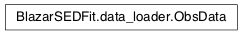

Moudule: data_loader¶
This module contains all the classes necessary to load SED data
from a file. The most effective way to import the SED data is to create an object
instance of ObsData class.
Classes and Inheritance Structure¶
Classes relations¶

Summary¶
ObsData([data_file, dupl_filter, …]) |
This class provides a powerful interface to load observational data stored in a file. |
Module API¶
-
class
BlazarSEDFit.data_loader.ObsData(data_file=None, dupl_filter=False, data_set_filter=None, UL_filtering=False, UL_value=0, **keywords)[source]¶ Bases:
objectThis class provides a powerful interface to load observational data stored in a file. The following parameters set the corresponding class members:
Parameters: - data_file – (str), path to the data file
- z – (float), redisfhit, if not provided it is looked up in the file meta-data
- obj_name – (str), if not provided it is looked up in the file meta-data
- restframe – (str) restframe of the data, possible values are
'src'or'obs', if not provided it is looked up in the file meta-data - col_types – (str), string specifying the way data are organized in columns in the input file.
This string is passed to the method
set_data_cols(). If not provided it is looked up in the file meta-data. See the correspondingset_data_cols()documentation for details. - col_nums – (str), string describing the corresponding column data number
- data_scale – (str)
'lin-lin'or'log-log',it is looked up in the file meta-data. This parameter allows to specify if the data in the file are stored as in log-log or lin-lin scale - data_set_filter –
a filter to filter the SED data according to the data_set value, eg:
'data_set_filter='mw-1', will filter data withdata_set=='mw-1','data_set_filter=['mw-1','mw-2']'will filter data withdata_set=='mw-1'ordata_set=='mw-2'Note
Historical data will be only plotted but will not be used in the fit.
Class Members storing the SED data:
data used to fit
- nu_data
- nuFnu_data
- dnu_data
- dnuFnu_data
- T_data
- data_set
upper limits
- nu_data_UL
- UL_data
The private method
_load_data()populates the data members starting from the data in the file. Data are properly transformed according to therestframeanddata_scalevalues.Examples
The following lines shows and example of how to embed meta-data in the header of the SED data file, just adding in the header of the file a line starting with
#and followed by the indetifiermd, the meta-data name and value :# metadata # md z 0.0308 # md restframe obs # md data_scale lin-lin # md col_types x,y,dy,data_set # md obj_name J1104+3812,Mrk421 # # Frequency [Hz] EnergyFlux [erg/cm2/s] # Xval Yval YvalError data_set-flag 2.299540e+09 1.340900e-14 3.910000e-16 campaing-2009 2.639697e+09 1.793088e-14 3.231099e-26 campaing-2009 4.799040e+09 2.313600e-14 2.400000e-16 campaing-2009 4.805039e+09 1.773414e-14 1.773414e-15 campaing-2009 4.843552e+09 2.776140e-14 2.615339e-26 campaing-2009 7.698460e+09 3.696000e-14 4.620000e-16 campaing-2009 8.267346e+09 2.836267e-14 2.836267e-15 campaing-2009 8.331867e+09 3.989630e-14 3.627671e-26 campaing-2009 8.388659e+09 3.163450e-14 1.931495e-15 campaing-2009 8.399994e+09 4.000500e-14 5.041094e-15 campaing-2009 1.044892e+10 4.626737e-14 3.297726e-26 campaing-2009
Assuming that the data file path has been stored in
SED_file=/path/to/file/file.txt, the data can be imported as follows:that is completely equivalent to:
-
_build_data(dupl_filter=False)[source]¶ private method to load and build the SED data
Parameters: dupl_filter (bool) – keyword to perfrom filtering of duplicated entries Variables: dt – numpy dtype for the SED data Data Processing
- checks if data errors are provided
- separates historical from simultaneosu (used in the fit) data
- filters upper limits
- removes duplicate entries
- performs restframe transformation
- performs lin-lin, log-log transformations
-
add_systematics(syst, nu_range=None, data_set=None)[source]¶ add systematics to errors
Parameters: - syst – (float) systematic value (fractional)
- nu_range – array_like of floats, [nu_min,nu_max], optional, range of frequencies to apply sistematics
-
filter_UL(val=None)[source]¶ remove the upper limits points from from data
Parameters: val – minimum value to set the upper limit. As default, negative errors indicates upper limits, hence val=0. Retruns msk: a boolean array to mask the upper limits, i.e. all the data points with negative errors.
-
filter_data_set(filters, exclude=False)[source]¶ filter the data, returning all the data with data_set=filter if exclude=False (default) or returning all the data with data_set!=filter if exclude=True
Parameters: filter (str) – name of the data_set to filter
-
filter_freq(nu_min=None, nu_max=None, exclude=False)[source]¶ filter the data, keeping all the data with nu_min <nu< nu_max if exclude=False (defualt). The opposite if exclude=True
both nu_max and nu_min are in linear scale
Parameters: - nu_min (float) – lower limit of the range (linear scale, in Hz)
- nu_max (float) – upper limit of the range (linear scale, in Hz)
-
filter_time(T_min=None, T_max=None, exclude=False)[source]¶ filter the data, keeping all the data with T_min <T< T_max if exclude=False (defualt). The opposite if exclude=True
Parameters: - T_min (float) – lower limit of the range (MJD)
- T_max (float) – upper limit of the range (MJD)
-
find_time_span(data_set=None, silent=True, get_values=False)[source]¶ returns Tstart, Tstop, and Delta T for the full data set (if no dat_set is provided), or for a specific data_set
-
group_data(N_bin=None, bin_width=None)[source]¶ function to perform a spectral group of the data
Parameters: - N_bin – (int)
- bin_width – (float) logarthmic
Note
To perform a rebinning of the data has to be provided either
N_binorbin_width.
-
remove_dupl_entries(data)[source]¶ - remove duplicate entries
Parameters: data – (array) 2-dim array storing the the table of the data. Returns msk: a boolean array to mask the duplicated entries Note
One entry is flagged as duplicated as each comlum in a row of the data table is equal to the corresponding elements of another row
-
set_data_cols(col_types, col_nums)[source]¶ This method build the data columns from the columns in the data file, according to the user supplied specifications.
Parameters: - col_types – (str) string describing the column data names
- col_nums – (str) string describing the corresponding column data number
as parameter a strings listing the fields separated by a comma.
Note
if col_nums is not provide the order of the fields in the string must have the same order of the columns position in the input file, but is completely flexible, meaning that the order of the columns in the data file can be arbitrary. If you have an SED data file ready, for example with the flux on the first column, and the freq on the second, you have just to set
means that the y column is the first (i.e. number 0) and the x column is the second (i.e. number 1). This is equivalent to
and equivalent to
The columns allowed for the SED ascii data file are:
- x, freq value
- y, flux value
- dx, error
- dy, error
- Tstart
- Tstop
- data_set, is a flag for a given data set. The user can flag different data_set in the same ascii file, and it is possible to select which to use to fit and/or plot
Examples
If your file has a structure like:
Alternatively the dataCols specification can be stored as a metadata in the header of the SED ascii file:
-
set_error(error_value, nu_range=None, data_set=None, data_msk=None)[source]¶ - set all the paramters to same error
Parameters: - error_value – float, value of the error (fractional error)
- nu_range – array_like of floats, [nu_min,nu_max], optional, range of frequencies to apply the error value